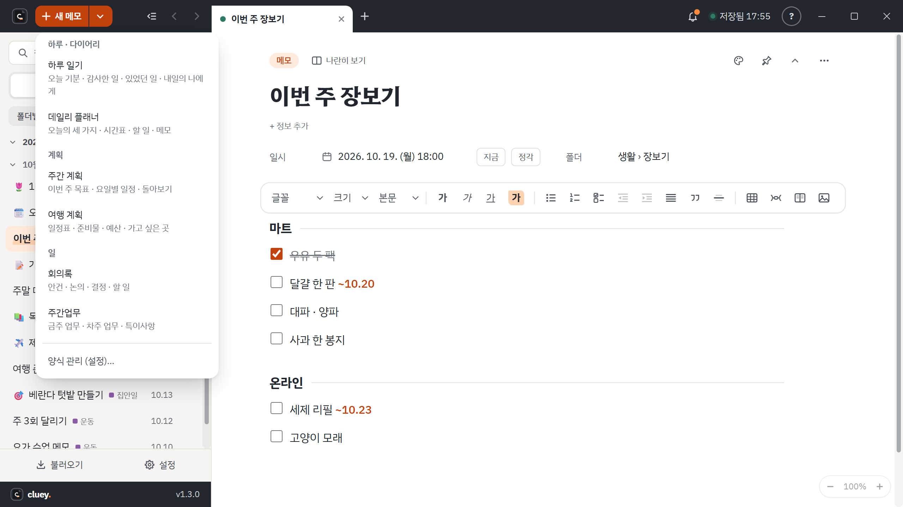
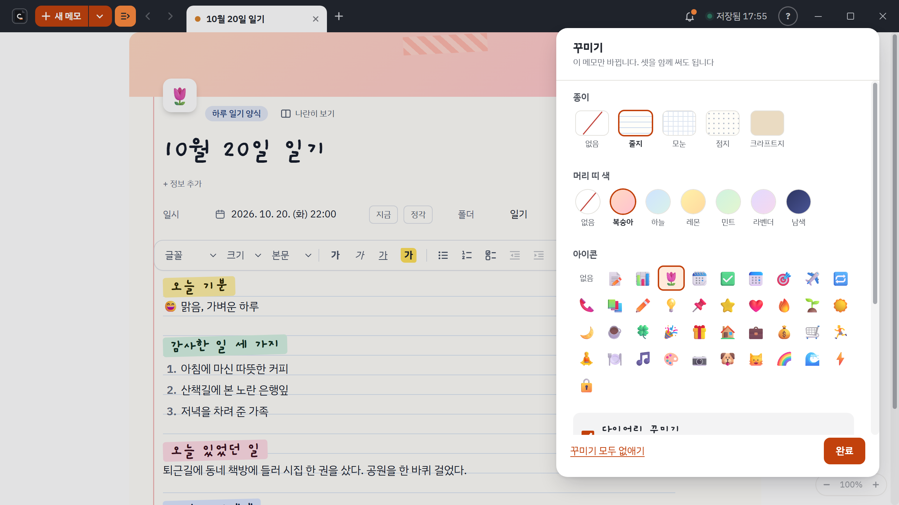

빈 메모로 시작하고, 필요하면 양식을 고릅니다
Cluey 의 새 메모는 아무것도 없는 빈 메모입니다. Ctrl+N, 왼쪽 위 + 단추, 어디서나 Win+Shift+N 모두 같습니다. 양식을 쓰고 싶으면 + 옆의 작은 ▾ 를 눌러 고릅니다. 폴더의 ⋯ 메뉴에서 "이 폴더에 양식으로 새 메모"를 골라도 됩니다.
양식에는 두 가지가 들어 있습니다
- 본문 틀: 안건, 논의 내용, 결정 사항, 할 일 같은 제목과 목록, 표가 미리 깔려 있습니다.
- 정보 칸: 일시, 폴더, 장소, 프로젝트, 참석자 중 이 양식이 쓰는 칸입니다. 메모마다 제목 아래 + 정보 추가 로 켜고 끌 수 있고, 꺼 둔 칸의 값은 지워지지 않습니다.
양식을 나중에 고쳐도 이미 쓴 메모는 바뀌지 않습니다. 메모를 만들 때 양식의 틀을 복사해 갖기 때문입니다.

지금 있는 양식
기본 양식은 회의록(안건, 논의 내용, 결정 사항, 할 일, 참석자 칸), 주간업무(금주 업무, 차주 업무, 특이사항), 빈 양식에서 쓰기 세 가지입니다.
1.3.0 부터 양식 11개가 더 들어 있습니다.
| 묶음 | 양식 |
|---|---|
| 하루 · 다이어리 | 하루 일기, 데일리 플래너, 습관 체크 |
| 계획 | 주간 계획, 월간 목표, 여행 계획 |
| 일 | 프로젝트 기획, 회고(KPT), 고객 상담, 통화 (회의록과 주간업무도 이 묶음) |
| 공부 · 기록 | 독서 기록, 공부 노트(코넬식) |
새로 들어오는 양식은 이미 양식을 만들어 쓰는 분의 것을 건드리지 않습니다. 같은 이름의 양식이 있으면 그대로 둡니다. 새 메모 메뉴에는 회의록, 주간업무, 하루 일기, 데일리 플래너만 먼저 보이고, 나머지는 설정의 양식 관리에서 눈 모양 단추로 켭니다.
내 양식 만들기
- 설정(톱니바퀴)의 양식 에서 + 새 양식 을 누릅니다. 이름, 쓸 정보 칸, 본문 틀을 정합니다.
- 이미 잘 정리한 메모가 있으면 그 메모에서 틀만 뽑아 새 양식으로 저장할 수도 있습니다. 쓴 글은 빠지고 제목과 구조만 남습니다.
- 같은 곳에서 양식의 묶음을 바꾸고, 순서를 끌어서 바꾸고, 새 메모 메뉴에 보일지 정합니다. 직접 만든 양식은 "내 양식" 묶음에 들어갑니다.
꾸미기
1.3.0 부터 어떤 메모든 꾸밀 수 있습니다. 메모 위쪽 ⋯ 나 오른쪽 클릭 메뉴의 꾸미기… 에서 작은 창을 열어 고릅니다. 세 가지를 따로 켜고 끌 수 있고 함께 써도 됩니다.
- 종이 바탕: 없음, 줄지, 모눈, 점지, 크라프트지. 밤 테마에서도 종이는 밝은 종이색으로 보입니다.
- 머리 띠와 아이콘: 복숭아, 하늘, 레몬, 민트, 라벤더, 남색 중 하나, 그리고 이모지 아이콘. 목록에도 아이콘이 보입니다.
- 다이어리 꾸미기: 손글씨 제목, 마스킹 테이프, 제목을 색 이름표로, 이모지 스티커. 손글씨 글꼴은 프로그램에 들어 있어 인터넷 없이도 보입니다.
양식마다 기본 꾸미기를 정해 둘 수 있고, 메모에서 바꿀 수도 있습니다. 꾸민 모양은 메모와 함께 저장되어 다른 PC, 공유 폴더, 스티커 메모에서도 같게 보입니다. 이전 버전의 Cluey 는 꾸밈을 무시하고 내용만 보여 줍니다.
